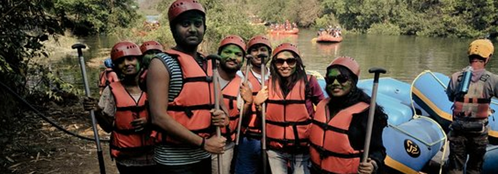
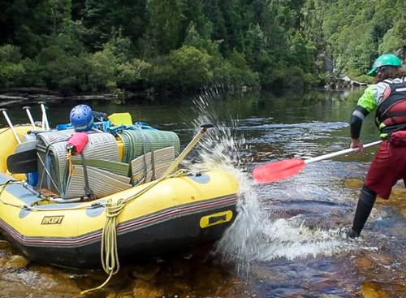
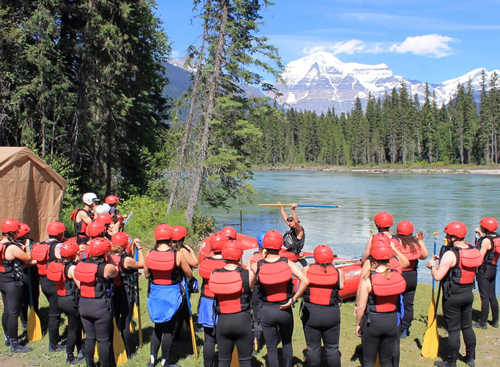
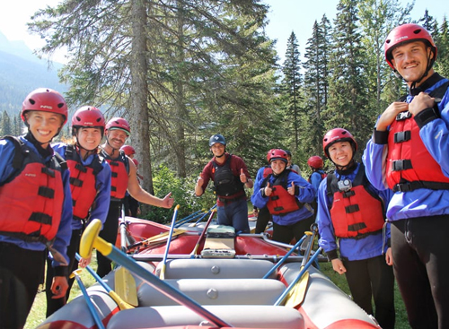

About Us
Your Adventure, Our Passion!
Our Story
White Water Rafting was founded in 2005 with a mission to provide thrilling and safe rafting adventures for individuals, families, and groups. We have since become a leading rafting adventure company, known for our commitment to safety, excitement, and unforgettable experiences.
Our Mission
Our mission is to deliver safe, thrilling, and exhilarating rafting experiences while ensuring that our guests feel like part of the White Water Rafting family. We are dedicated to promoting teamwork, safety, and environmental sustainability while helping you create memories that last a lifetime.
Why Choose Us?
- Experienced Guides: Our team of certified, experienced guides ensures that your safety is always the top priority.
- Exciting Adventures: From beginner to expert, we offer a wide variety of rafting experiences that cater to all skill levels.
- Commitment to Safety: We adhere to the highest safety standards and equip all participants with the best safety gear.
- Environmental Awareness: We are committed to protecting the environment and leaving no trace behind on our expeditions.
Meet the Team

John Doe
Lead Guide

Jane Smith
Safety Expert

Michael Johnson
River Expert